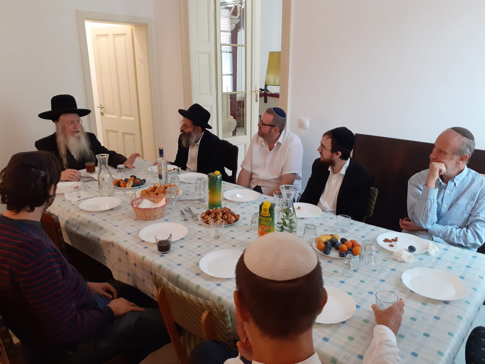
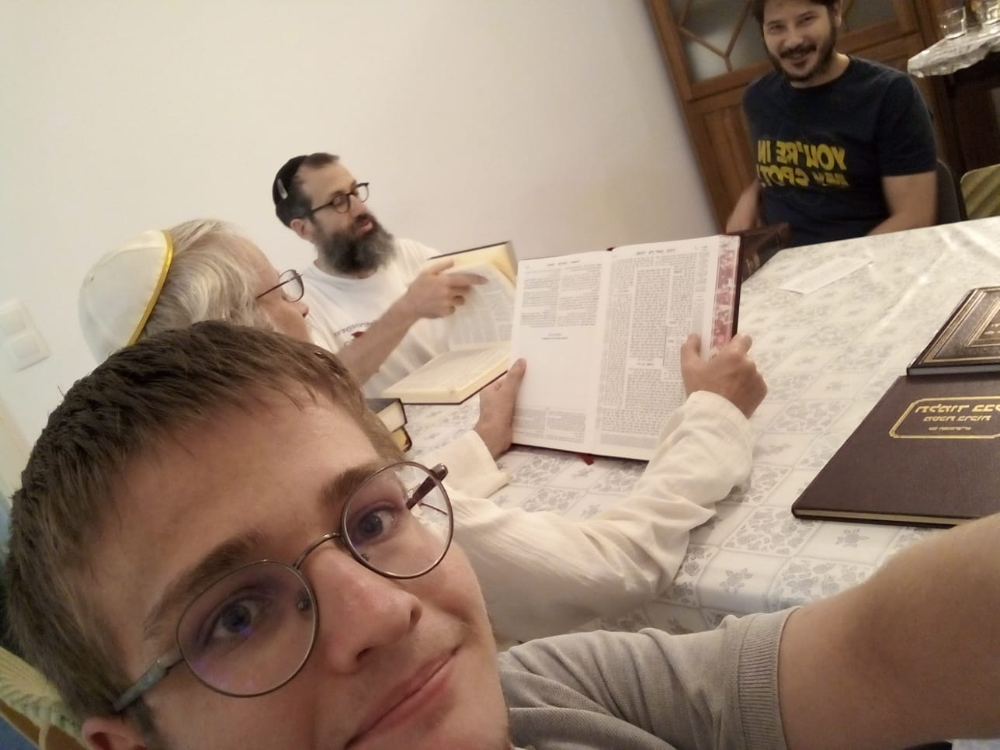
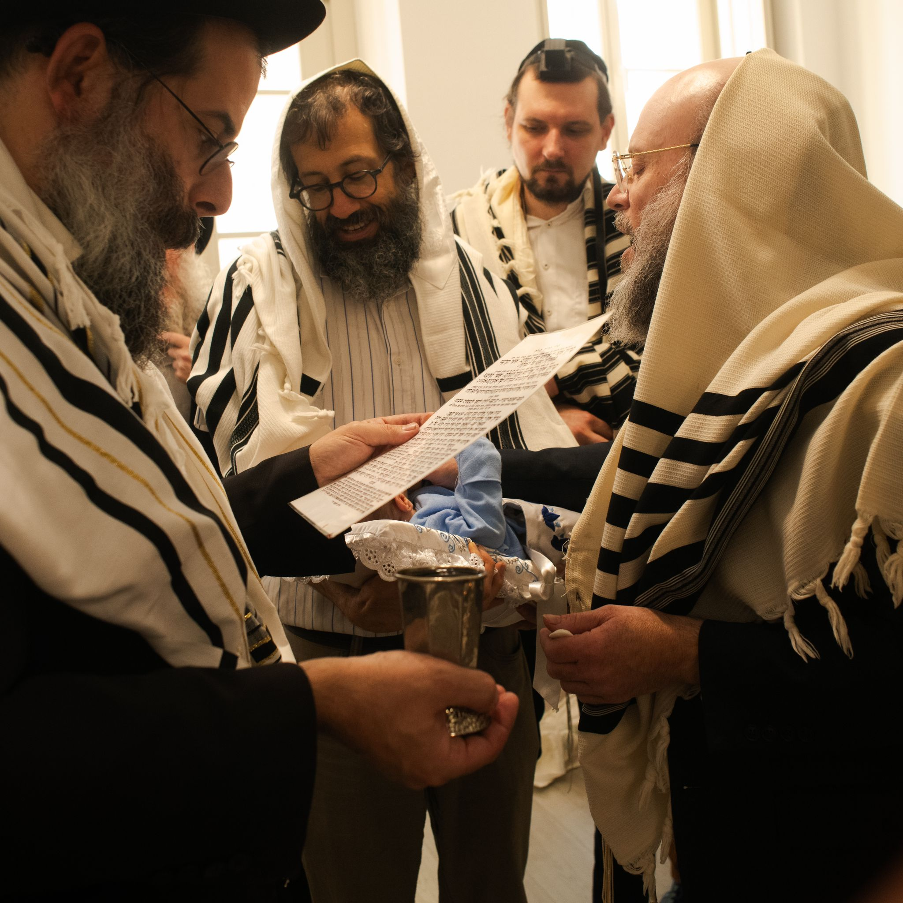
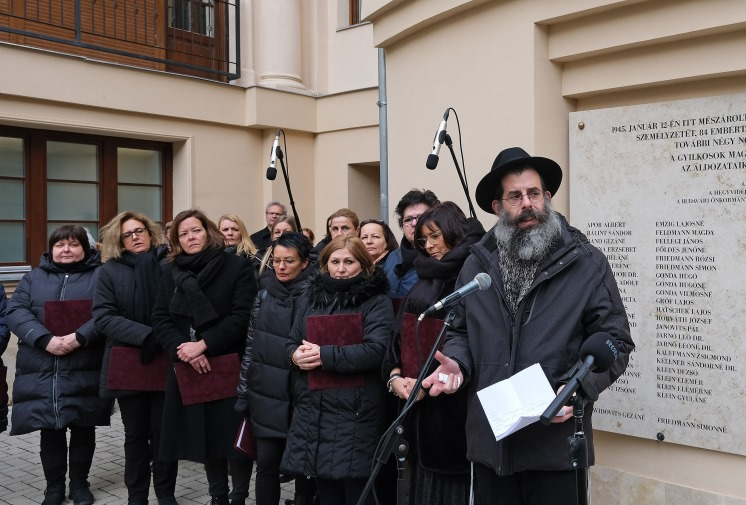

Orthodoxia Budán - Légy része a közösségnek!
Csatlakozz hozzánk sabeszenként!

Rendszeres Programjaink
Sábeszi Sáchrit
Csatlakozz be a reggeli imába, hallgasd meg a Tóraolvasást, maradj velünk a kidduson.
Ima 9:00-11:30, kiddus kb 2-ig
Kabbalat Shabbat
Szombatfogadás - Kabbalat sabbat énekléssel
Nyáron: másfél órával naplemente előtt
Télen: 15 perccel naplemente előtt
Online Misna Tanulás
Csatlakozz az online misna tanulásunkhoz Micha rabbival és Rambam magyarázatával.
19:00 hétfőnként
Lépj be a whatsapp csoportba
Én Jáákov
Csatlakozz hozzánk a zsinagógában, ahol a Talmud aggadikus részeit tanuljunk a Brachot traktátusból
19:20 hétfőnként
Közelgő Események
Hanuka Buli
2024. december 30.
délután 5-től
Palacsinta jeligével és jelleggel. Csak az jöjjön, aki nem allergiás rá. (De azért lesz más enni-innivaló is, presztízskvíz is, etc.) Budapest Városmajor utca 60.
Hanukai Kvíz
Hanuka minden napján egy újabb kérés fog megjelenni.
Minden helyesen megoldott kérdés után megjelenik a kérdéshez kapcsolódó betű.
Ezekből Hanuka végén össze lehet állítani egy szót, azok között, akik elküldik ezt a szót az alma@budaiorthodox.hu címre, kisorsoljuk Ács Dániel Nem Tudhatod című könyvét.
Hány gyertyát gyújtunk hanuka első napján bét sámmáj szerint
Híreink




R Micha szijjumja, Maszechesz Gittin. Vendégünk R Rabinowitz orthodox főrabbi.
2023. szeptember 3-án a reggeli imát követően az Alma utcai Közösség rabbija, R Micha Jerusalmi befejezte a Talmud Gittin kötetének tanulásását. Ezt megünneplendő lakomát tartottunk az Alma utcában, ahol vendégünk volt R Aryeh Rabinowitz, a MAOIH főrabbija.
Befejeztük a Brachot első perekét.
Több hónap kitartó tanulás után elérkeztünk a Talmud Brachot traktátusának második fejezetéhez. Hétfő esti tanulásainkon a Talmud aggadikus részeit tanulmányozzuk az Én Jáákov nevű kiadványból. Ez előtt még online tanuláson részt vehetünk Micha rabbival, akivel ugyanennek a traktásusnak a Misnáit tanuljuk Rambam magyarázataival.
Brit az almában.
Örömünnep volt nálunk, 6 évvel ezelőtt volt utoljára brisz az Alma utcában. A Cseh család második fiát léptettük Ábráhám szövetségébe. A mohel Rav Jehosua Adler volt, a kveterek R Zév Paskesz és Sáron, a szandek Rav Árje Mordecháj Rabinowitz, az ortodoxia főrabbija volt. A nevet R Micha Farnadi-Jerusalmi rabbink adta, míg a gyermeket Hegedüs Sault tartotta. A kisfiú a Jákov Elázár nevet kapta. Mazal Tov!
A maros utcai mészárlásról tartott megemlékezést az önkormányzat
1945. január 12-én borzalmas tömeggyilkosságok helyszíne volt a Hegyvidék: a Maros utcai zsidókórházban, a Városmajor utcai Bíró Dániel Kórházban, valamint az Alma utcai szeretetotthonban védtelen emberek százait ölték meg a XII. kerületi nyilasok.
A meggyilkoltakra emlékezve az egykori zsidókórház udvarán található emléktáblánál, valamint a második világháború kerületi áldozatainak városmajori (Mohácsi András, közösségünk tagja által tervezett) emlékművénél helyezte el koszorúit a Hegyvidéki Önkormányzat.
Farnadi-Jerusálmi Micha rabbink szintén is beszélt az egybegyűltek előtt. Úgy látja, vannak, akik számára a tények nem fontosak, és negatív fényben tüntetik fel az emlékezést, mondván, egyeseknek „mindig csak ugyanaz jut az eszébe”.
De ez nem így van, hiszen emlékezni kell ahhoz, hogy ne felejtsük el a szörnyűségeket, azok ne történhessenek meg ismét.
A beszédről a felvételt itt láthatjátok:
Ismerd fghjmeg Alma - Budai Ortodox Közösség-et
A múlt század harmincas éveiben alapított ortodox zsidó idősotthon imaterme 2020-ban nyílt meg újra önálló zsinagógaként a komplexum klasszicista épületében. A már csaknem egy évszázados épületben működő „Alma – Budai Orthodox Zsinagóga” így az egyetlen 21. századi alapítású ortodox imaház Budán. Ennek a MAOIH intézménynek egyedülálló jellegzetessége, hogy a közösség rabbija, dr. Farnadi-Jerusálmi Márk Micha Izraelben él, azonban rendszeresen látogatja a budai ortodox közösséget, illetve hetente Tóra-tanulást vezet Zoomon.